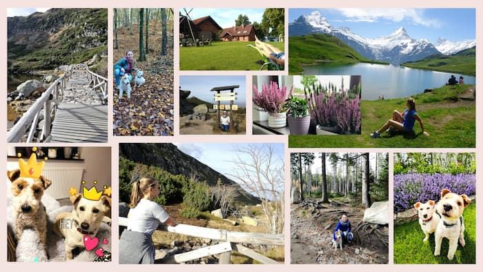

Nature
I love nature! Being outdoors or simply observing outside surrounding from my window gives me a lot of pleasure. A tiny insect, a beautiful flower, a gentle breeze, a sunny day, a starry sky, a massive mountain range, or a stormy sea. Doesn't matter! These are all perfect to me, as nature brings amazing changes that I could observe endlessly.
I'm also an animal lover. Dogs have always being my number one. Since I can only remember, I wanted a dog. Whenever I was in a company of one, I was in heaven. I had to wait quite a long for that speciall moment, because I got my first dog only after my wedding. But now, I'm a happy owner of two adorable dogs that make me smile every day.
